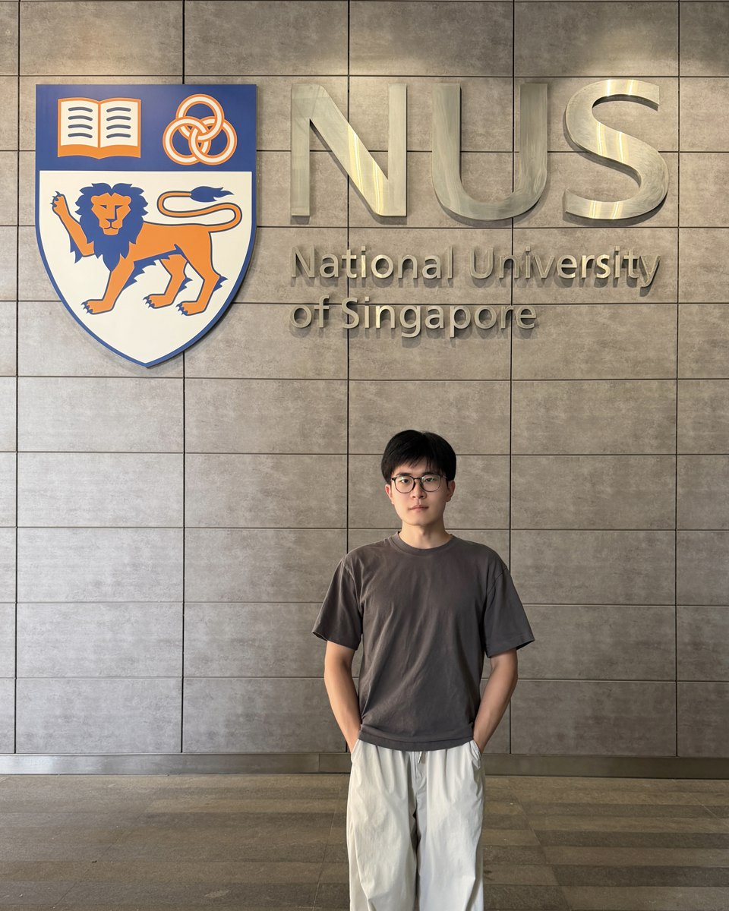
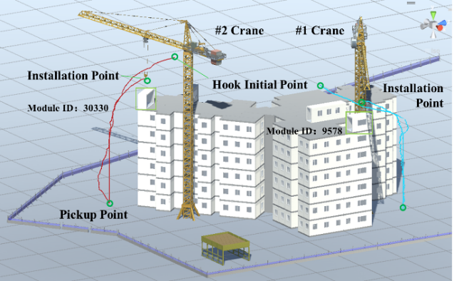
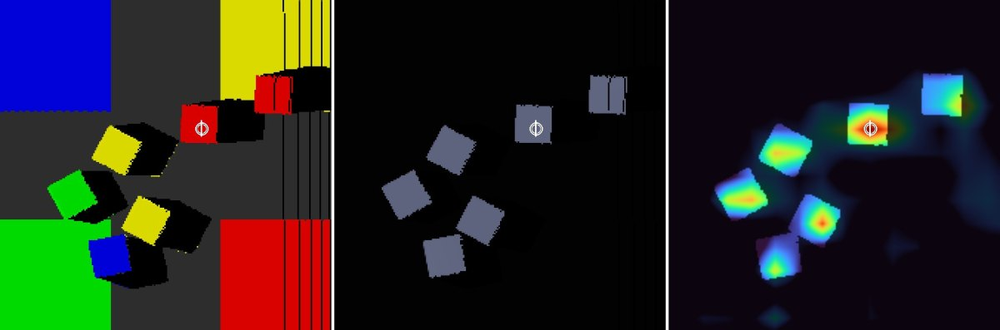
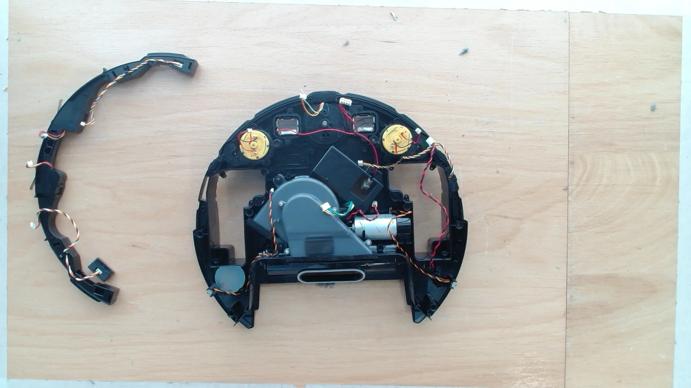
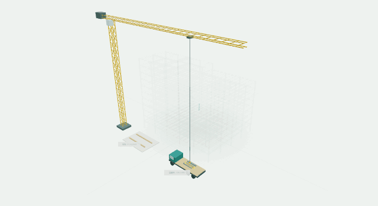

Zhaozheng Shen沈召正
Department of Civil and Environmental Engineering土木与环境工程系 · Advisor: Assoc. Prof. Justin Yeoh导师：Justin Yeoh 副教授
I am a PhD student and Research Engineer at the National University of Singapore. My research focuses on learning-based control, dynamics and motion planning for robotic systems, with a particular interest in underactuated tower cranes and autonomous construction equipment.
我是新加坡国立大学的博士研究生和研究工程师，研究方向为机器人系统的学习型控制、动力学与运动规划，尤其关注欠驱动塔吊与自主施工装备。
My current work investigates reinforcement learning and model-based control for rapid load transport, active anti-sway control and stable arrival. I also work on robotic manipulation and geometric perception for automated interior finishing in prefabricated construction.
目前的工作研究用强化学习与基于模型的控制实现快速吊运、主动抑摆与稳定到位；同时参与预制建筑室内装修自动化中的机器人操作与几何感知研究。
- Underactuated robotic systems欠驱动机器人系统
- Reinforcement learning and model-based control强化学习与基于模型的控制
- Motion planning and robotic manipulation运动规划与机器人操作

Featured research主要研究
Other research & collaborations其他研究与合作

Dual-Tower-Crane Path Planning in Modular Construction模块化施工中的双塔吊路径规划Collaboration · ISARC 2026 · fourth author合作研究 · ISARC 2026 · 第四作者 Reinforcement-learning path planning for two tower cranes sharing a modular-construction site, in a BIM-based Unity environment.在基于 BIM 的 Unity 环境中，用强化学习为共享模块化施工现场的两台塔吊规划路径。Earlier research & course projects早期研究与课程项目

Vision-based object sorting with deep reinforcement learning基于视觉与深度强化学习的物体分拣ME5402 Advanced Robotics · group project (4 students)ME5402 高级机器人学 · 小组项目（4 人） Reproduced pixel-wise deep Q-learning for UR5 vision-based sorting in CoppeliaSim and tested a simple perception add-on.在 CoppeliaSim 中复现 UR5 视觉分拣的逐像素深度 Q 学习，并测试一层简单的感知规则。
Visual Next-Step Prediction in Robotic Disassembly机器人拆解的视觉下一步预测Collaboration · Northeastern University (remote)合作研究 · 美国东北大学（远程） YOLOv8 component detection and a multi-frame Transformer (RIVET) that predicts the next disassembly action of a robot vacuum.YOLOv8 部件检测与多帧 Transformer（RIVET），预测扫地机器人的下一步拆解动作。 Intelligent Construction Scheduling for Steel-Frame Structures钢框架结构智能施工调度Master’s thesis research · Tongji University, 2022–2025硕士学位论文研究 · 同济大学，2022–2025 BIM-derived precedence constraints, installation sequencing with DADGA, multiobjective crew scheduling with MOACS, and an exploration of Dueling Double DQN for rescheduling.BIM 推导的先后约束、DADGA 安装排序、MOACS 多目标班组调度，以及对 Dueling Double DQN 重调度的探索。
BIM Construction Management PlatformBIM 建造管理平台Bachelor’s team project · Tongji University, 2022本科毕业设计团队项目 · 同济大学，2022 IFC models parsed into a graph database and linked to cost, equipment, document and progress modules; later extended with a 3D/4D schedule replay.把 IFC 模型解析进图数据库，并与成本、设备、资料和进度模块关联；之后扩展了三维 / 4D 施工方案回放。- Jun. 20262026.06Co-authored paper on reinforcement-learning path planning for dual tower cranes published in the ISARC 2026 proceedings.合作论文（双塔吊强化学习路径规划）发表于 ISARC 2026 会议论文集。 DOI
- Aug. 20252025.08Started my PhD at the National University of Singapore and joined the PPVC robotic interior-finishing project as a Research Engineer.在新加坡国立大学开始博士学习，并以研究工程师身份加入 PPVC 机器人室内装修项目。
- May 20252025.05Completed my Master of Engineering at Tongji University.于同济大学获得工程硕士学位。
- Mar. 20252025.03Paper on multiobjective ant colony scheduling published in the ASCE Journal of Construction Engineering and Management.多目标蚁群调度论文发表于 ASCE Journal of Construction Engineering and Management。 DOI
Publications论文
Reinforcement Learning–Driven Intelligent Path Planning for Dual Tower Cranes in Modular Construction Sites
Multiobjective Ant Colony System Algorithm for Component-Level Construction Schedule Optimization
A dual-adaptive directed genetic algorithm for construction scheduling
Get in touch联系方式
Happy to discuss learning-based control, motion planning and robotic manipulation, especially for cranes and construction robots.
欢迎交流学习型控制、运动规划与机器人操作，尤其是塔吊与施工机器人方向。
zhaozhengcee@u.nus.edu